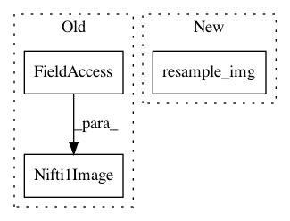

530e3ca9148a36982c110007c081a571eff660e1,nisl/io/nifti_region.py,NiftiMapsMasker,transform,#NiftiMapsMasker#Any#Any#,327
Before Change
region_signals, self.labels_ = self._cache(
region.img_to_signals_maps, memory_level=1)(
nibabel.Nifti1Image(data, affine),
nibabel.Nifti1Image(self.maps_data_, self.maps_affine_),
mask_img = self.mask_img_)
region_signals = self._cache(signal.clean, memory_level=1
After Change
// FIXME: add _cache to the calls to resampling.resample.
if self.target == "mask":
niimgs = resampling.resample_img(
niimgs, interpolation="continuous",
target_shape=utils._get_shape(self.mask_img_),
target_affine=self.mask_img_.get_affine())
if self.target == "maps":
niimgs = resampling.resample_img(
niimgs, interpolation="continuous",
In pattern: SUPERPATTERN
Frequency: 3
Non-data size: 3
Instances
Project Name: nilearn/nilearn
Commit Name: 530e3ca9148a36982c110007c081a571eff660e1
Time: 2013-05-27
Author: philippe.gervais@inria.fr
File Name: nisl/io/nifti_region.py
Class Name: NiftiMapsMasker
Method Name: transform
Project Name: dPys/PyNets
Commit Name: 01d18e835815feedeac2fbeff8025cdd94128eaa
Time: 2019-12-09
Author: dpisner@utexas.edu
File Name: pynets/fmri/clustools.py
Class Name: NilParcellate
Method Name: create_clean_mask
Project Name: dPys/PyNets
Commit Name: 27e4a648a96c76de6b7ed24ea95ea76ee17f623d
Time: 2020-01-02
Author: dpisner@utexas.edu
File Name: pynets/registration/register.py
Class Name: FmriReg
Method Name: atlas2t1wmni_align